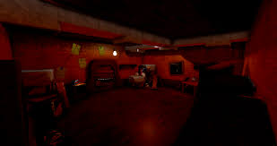

In a cozy house on the edge of town, there lived a family of four. The parents, Mr. and Mrs. Thompson, had two daughters, Lily and Mia. Lily was the elder one, a bookworm with a penchant for adventure, while Mia, the younger sister, was a playful spirit always eager to explore.
One rainy afternoon, while rummaging through the cluttered attic, Mia stumbled upon an old pendrive buried beneath a pile of forgotten toys.
Excited by their discovery, she rushed downstairs to show Lily.
With trembling fingers, they plugged the pendrive into their computer, eager to uncover its secrets. But as the files began to load, the room grew eerily silent, and a chill swept through the air.
 Instead of finding family photos or old documents, the pendrive contained a single video file labeled "Watch Me."
The video depicted their own house, filmed from hidden cameras placed in every room. The sisters watched in horror as they saw themselves going about their daily lives, unaware of being watched.
Suddenly, the video cut to footage of a dark figure moving through the house at night, its presence lurking in the shadows.
Terrified by what they had seen, Lily and Mia turned to their parents for answers.
But to their horror, their parents seemed oblivious to the danger lurking within their own home.
As night fell, strange occurrences began to plague the house—whispers echoed through the halls, objects moved on their own, and eerie shadows danced in the corners of their vision. Desperate for answers, Lily and Mia returned to the attic, where they found a hidden door leading to a secret chamber.
Inside, they discovered a shrine dedicated to a mysterious entity, its dark presence pulsing with malevolence.
Realizing that they were in grave danger, Lily and Mia knew they had to act fast to protect their family and banish the evil that had taken root in their home. With hearts pounding and hands shaking, they prepared to confront the darkness that lurked within the shadows.